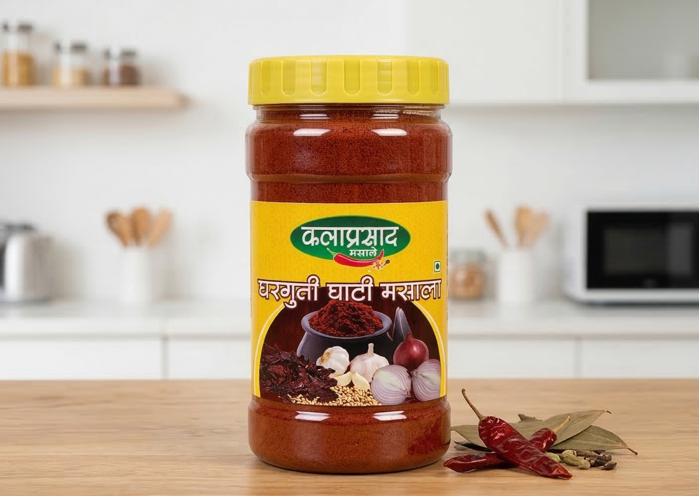

Started by four housewives, our spices are homemade using traditional methods with no preservatives.

"खूप छान चव आहे! अगदी घरगुती मसाल्यासारखा."
— Swikruti Jadhav"Authentic taste like village homemade spices."
— Rohit Deshmukh"Perfect for daily cooking. No irritation or artificial smell."
— Kavita JadhavPrepared by rural women self-help group with care and dedication.
100% natural spices with no chemicals or artificial colors.
Authentic Maharashtrian recipes passed down generations.
Clean, hygienic preparation just like your own kitchen.
Kalaprasad Ghati Masala is lovingly prepared by the women of Kalaprasad Mahila Self-Help Group in Sangli district. Each pack carries the warmth of home, traditional knowledge, and the determination of rural women working together to support their families.
From selecting quality ingredients to careful grinding and packing, every step is done by hand with attention, cleanliness and pride. This is not factory-made spice — it is homemade taste passed down through generations.
When you choose our masala, you are not just buying a product. You are supporting women's livelihoods, preserving Maharashtrian food traditions, and bringing authentic regional flavour into your kitchen.
Your masala order will be placed on WhatsApp.